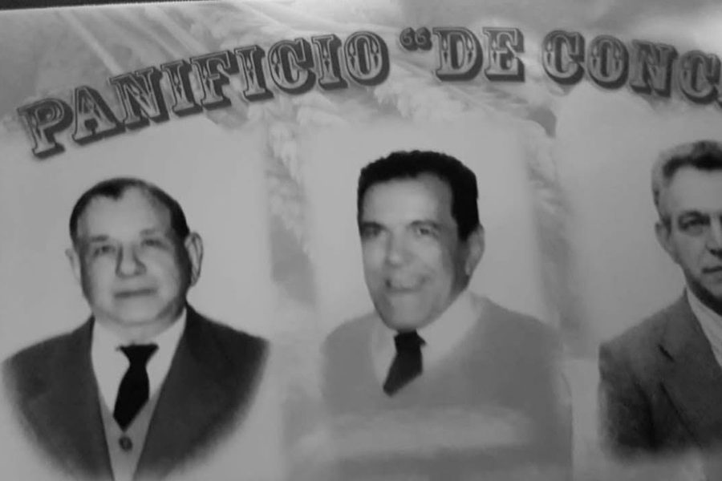
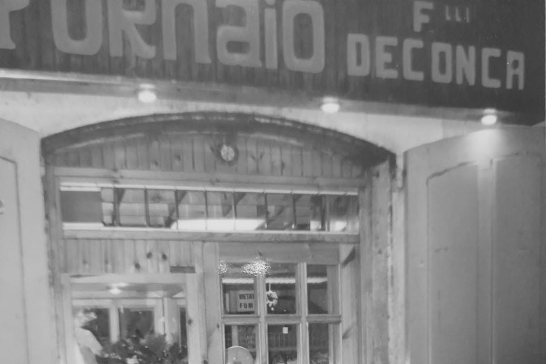
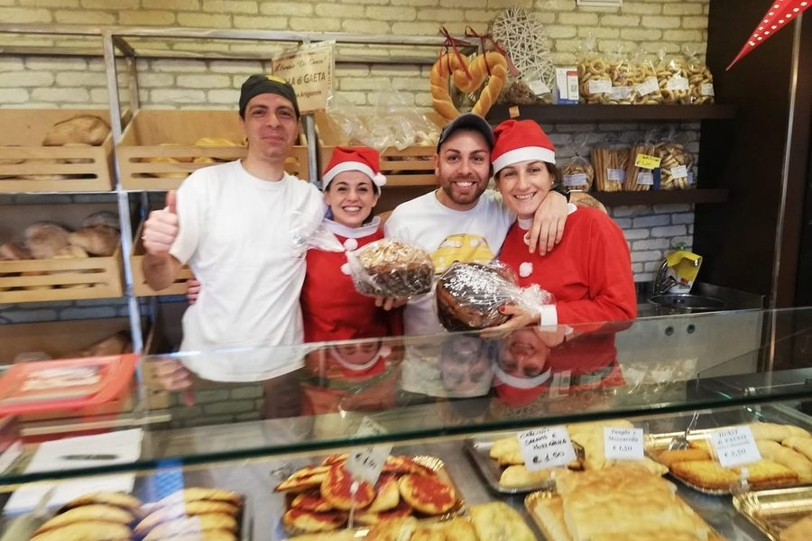

Cento anni di pane sul lungomare
Dal 4 aprile 1922 il forno non ha mai cambiato indirizzo.
-
1922
Almerindo De Conca torna dall'America e, con la moglie Annunziata Di Schino, apre il forno all'angolo tra il Lungomare Caboto e Salita Porta di Terra, nel quartiere medievale. Gas e corrente elettrica non sono ancora arrivati nelle case: pane e dolci si fanno con la legna.

Il manifesto «Panificio De Conca» con i tre ritratti, [[ANNO E NOMI]] -
Dopoguerra
Il forno riapre dopo la breve interruzione della guerra. Nell'immediato dopoguerra il pane va anche a chi ne ha bisogno, tra cui gli sfollati della caserma Cosenz.

Al lavoro in laboratorio, [[ANNO]] -
1958
L'insegna diventa "Il Fornaio di De Conca Almerindo e figli": Anna, Aida, Antonio e Alfonso lavorano con il padre.

L'insegna «Fornaio F.lli De Conca» sopra la porta, [[ANNO]] -
1965
Antonio e Alfonso prendono in mano il forno. Per due generazioni di gaetani sono "i fratelli De Conca": pane, tielle di tutti i tipi, pizze, pizzette, tozzi, biscotti, rustici, torte e dolci delle feste.
-
2005
Alessandro, figlio di Alfonso, subentra alla guida. Le ricette restano quelle; accanto arrivano nuovi prodotti.
-
2022
Il centenario. Il Comune di Gaeta consegna una pergamena "a tre generazioni che dall'aprile 1922 hanno investito capacità, sforzi e sacrifici nel Panificio De Conca, uno dei punti di riferimento della gastronomia gaetana".
Foto 22 — pergamena del centenario, 3:2[[Foto della pergamena]] -
Oggi
Stesso locale, stesso forno, stessa famiglia. E la Sciusciata di Capodanno, la tradizione gaetana di canti e auguri della notte del 31 dicembre, che ogni anno parte da qui [[da confermare con il titolare]].

La famiglia al banco, Natale [[ANNO]]
Vieni a trovarci
Aperto oggi 7:30–13:15 e 16:30–20:00
Lungomare Caboto [[CIVICO]], Gaeta, nel quartiere medievale, di fronte alla base. Parcheggio sul lungomare.